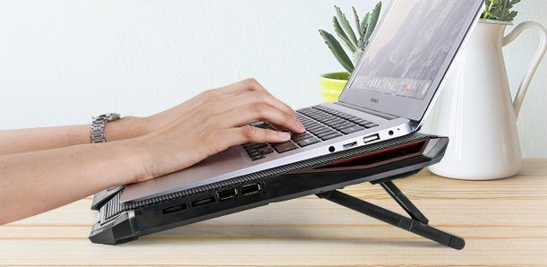

Categorias
Computadora, laptop, audifonos bluetooth, reloj inteligente, smartwatch, mouse, relojes, bocinas... y mas. Un post por cada uno.

Son mas que un accesorio de computacion, son un excelente complemento eficientador. Tecnicamente hablando son un periferico pensado en evitar sobre calentamineto en usos prolongados de tiempo; si las jornadas de trabajo son largas o si la laptop se usa para sesiones de juego el equipo se expone a sobrecalentamiento y el ventilador de fabrica suele quedarse corto, mas si no es un ordenador Gamer.
Si estas mucho tiempo frente a tu portatil un ventilador no es un lujo, es una inversion necesaria si desear conservar en mejor estado tu laptop, pues el calentamiento de los computadores es normal y daña los componentes internos de la computadora y la alentan. Haciendo cuentas resulta mas econominco comprar un ventilador que pagar a soporte tecnico o cambiar de portatil antes de su ciclo de vida normal.
Su funcion es evitar o reducir el calentamiento de los portatiles, que es normal, pero se agrava con jornadas de trabajo prolongadas o porque el ventilador que trae incluido de fabrica no sea bueno. Ese calentamiento entorpece el trabajo o nuestros juegos pues alenta el equipo.
Como con todos los productos, si se opta por la opcion menos barata o se busca una marca con prestigio de por medio se suelen obtener productos con mejor rendieminto. Un ventilador de mala calidad puede no enfriar bien, por lo que seria una inversion inutil, o descomponerse facilmente, estas 2 consecuencias se deben a que los mas economicos suelen traer solo una aspa para ventilar, un diseño ineficiente o poco ergonomico y un su cable de conexion USB debil en la base por lo que se averia al poner las muñecas a los lados del equipo.
Existen 2 tipos de ventilaores externos, los que son como "tapetes" y se colocan debajo de la laptop y unos con el aspecto de una memoria USB robusta, ambas pùeden cumplir bien su funcion si son de buena calidad y la eleccion podria depender de gustos y de comodidad con una u otra opcion, aunque haciendo una navegacion entre las opiniones de compradores en plataformas como Amazon y Mercado Libre muchos estan mas satisfechos con ventiladores estilo memoria USB (Su cable de conexion no es USB, tiene el aspecto de una memoria USB robusta pero se conecta en otro puerto del PC).
Computadora, laptop, audifonos bluetooth, reloj inteligente, smartwatch, mouse, relojes, bocinas... y mas. Un post por cada uno.